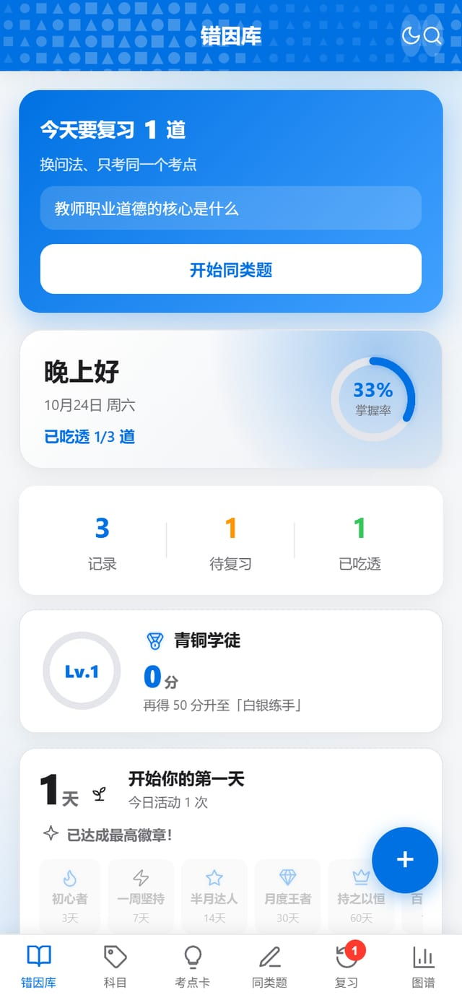
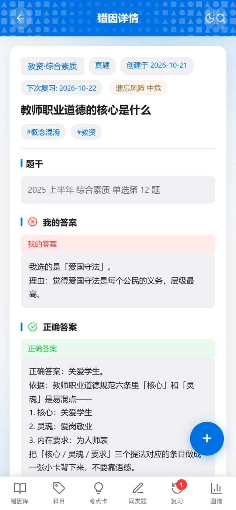

你刷 1000 道题，系统只记录"你错了 200 道"。真正决定下次对错的，是这 200 道里有多少是同一个错因。
数据存在你自己的浏览器里，不上传服务器 · 可装到手机主屏


不是题做得少，是错的题从来没被归类
你收藏了 200 道错题，但它们混在一起，看不出"我一直栽在同一类地方"。
翻哪道看哪道，真正该补的那三类错因，一次也没被集中处理过。
时间只够看一页，但你说不出"我最薄弱的三个考点"是哪三个。
刷完一套卷子，10 分钟就能录完
只记正确答案没用。要记的是你当时选了什么、为什么选它——错因就藏在这句话里。
概念混淆 / 审题失误 / 记忆缺口 / 计算错误 / 干扰项识别失败，并给出能背下来的记忆锚点。
1 / 2 / 4 / 7 / 15 天自动排期。考前一天打开，看到的只有真正没吃透的那几道。
「同一个错因犯三次，不是因为笨，是因为前两次都没人告诉你，那是同一个错因。」
错因档案的设计前提没有，也不打算做。题库打不过粉笔、万题库，而且你已经在用了。错因档案刻意只做"刷题之后"那一步，可以和任何刷题 App 共存：错题截图或粘贴进来就行。
不用装 App，浏览器打开就能用，也能"添加到主屏幕"。数据默认存在你自己的设备上，不需要注册账号。
你自己填 API Key（OpenAI 兼容接口都行），请求直接从你的浏览器发出，不经过我们的服务器。没有 Key 也能先体验内置的示例流程。
不会。默认纯本地；只有你自己在设置里填了云端账号（Supabase）才会同步，且同步到的是你自己创建的项目。